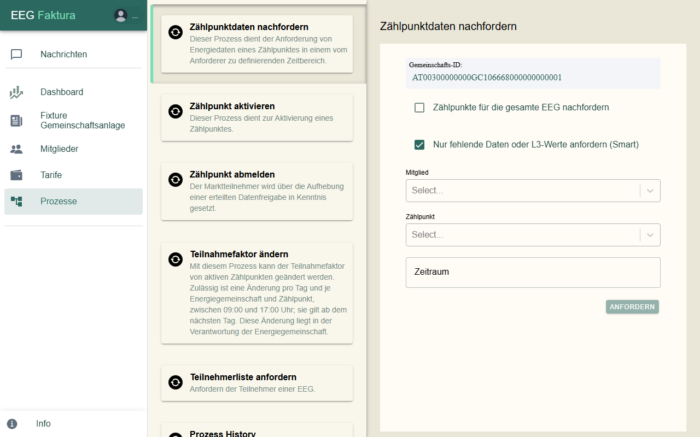
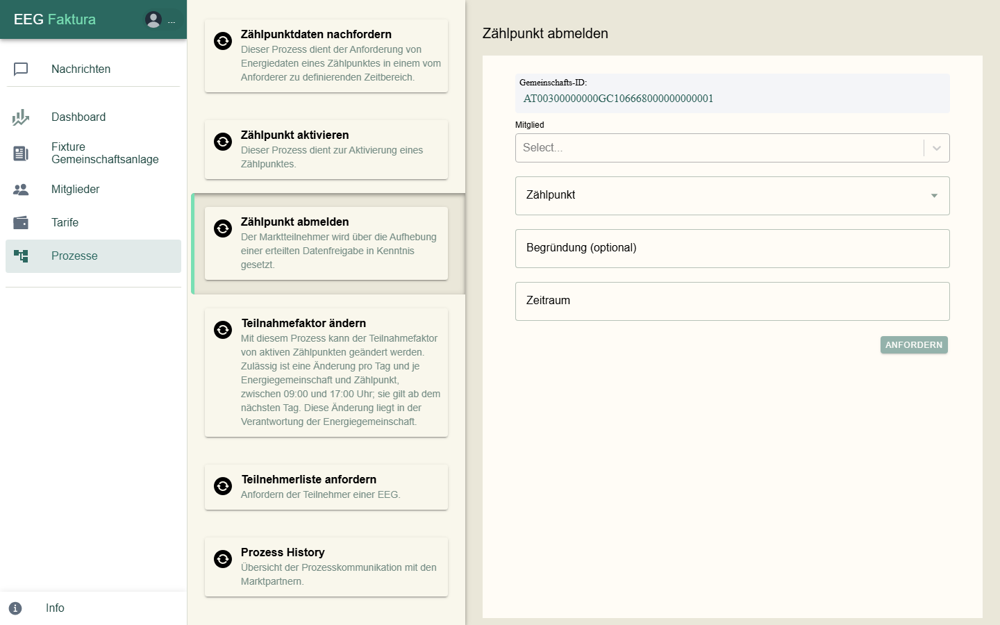
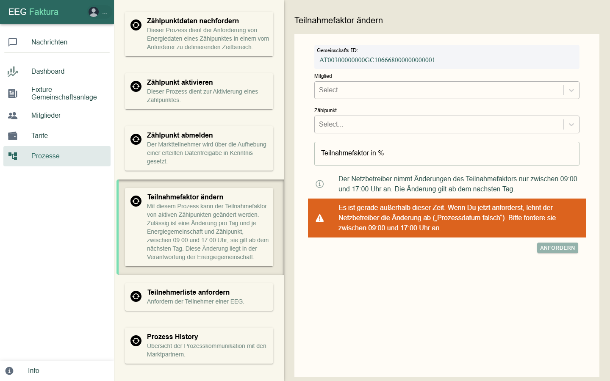
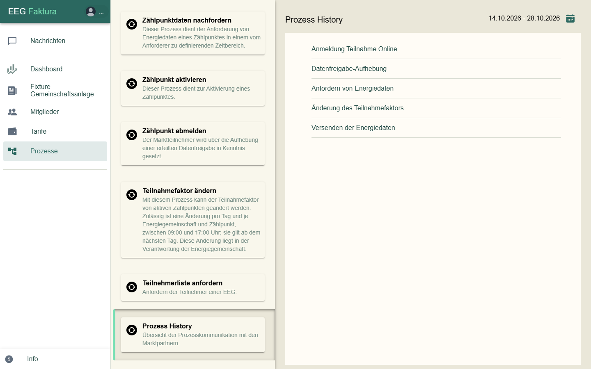

Prozesse beim Netzbetreiber¶
Unter Prozesse löst du Vorgänge beim Netzbetreiber aus. Den Menüpunkt gibt es nur für EEG-Admins von Gemeinschaften mit Online-Anbindung. eegFaktura verschickt die Anfrage über die Marktkommunikation (EDA); die Antwort kommt später unter Nachrichten.
Jedes Formular zeigt oben die Gemeinschafts-ID. Nach Anfordern meldet eegFaktura „Die Anforderung wurde an den Netzbetreiber gesendet.“ oder den Grund, warum es nicht geklappt hat.

Zählpunktdaten nachfordern¶
Fordert Energiedaten für einen Zeitraum erneut an, z. B. wenn Daten fehlen oder nur vorläufig (L3) sind.
- Wähle Mitglied und Zählpunkt (mehrere möglich) — oder hake Zählpunkte für die gesamte EEG nachfordern an.
- Wähle den Zeitraum.
- Lass Nur fehlende Daten oder L3-Werte anfordern (Smart) angehakt: eegFaktura prüft zuerst, wo wirklich etwas fehlt, und schlägt vor, nur diese Zählpunkte anzufordern.
- Klicke auf Anfordern.
Für heute und spätere Tage gibt es noch keine Daten. Zählpunkte, die in der letzten Stunde schon angefordert wurden, überspringt eegFaktura und sagt das. Das Ergebnis kommt als Zusammenfassung Energiedaten-Anforderung unter Nachrichten.
Zählpunkt aktivieren¶
Meldet einen noch nicht aktiven Zählpunkt (erneut) beim Netzbetreiber an, z. B. nach einer Abweisung, wenn der Fehler behoben ist. Wähle Mitglied und Zählpunkt. Hast du vom Netzbetreiber einen Aktivierungs-Code, hake Offline-Registrierung an und trage ihn ein. Bei der Online-Anmeldung muss das Mitglied die Datenfreigabe danach bestätigen; es bekommt dazu die Mail „Freigabe-Aufforderung“.
Zählpunkt abmelden¶
Hebt die Datenfreigabe eines Zählpunkts beim Netzbetreiber auf — der Zählpunkt verlässt die Gemeinschaft. Soll er später wieder teilnehmen, ist eine neue Anmeldung nötig.

- Wähle Mitglied und Zählpunkt (mehrere möglich).
- Wähle unter Zeitraum das Ende der Teilnahme (frühestens morgen). Das Feld Begründung (optional) wird derzeit nicht an den Netzbetreiber übermittelt.
- Klicke auf Anfordern und bestätige „Datenfreigabe aufheben“ mit Aufheben.
Fehlt eegFaktura die Kennung der Datenfreigabe, fordere zuerst die Teilnehmerliste an (siehe unten).
Teilnahmefaktor ändern¶
Ändert, welchen Anteil ein Zählpunkt an der Gemeinschaft hat.

- Wähle Mitglied und Zählpunkt (die Auswahl zeigt den aktuellen Faktor).
- Gib den neuen Teilnahmefaktor in % ein (1–100) und klicke auf Anfordern.
Der Netzbetreiber nimmt Änderungen nur zwischen 9 und 17 Uhr an, eine pro Tag je Zählpunkt; die Änderung gilt ab dem nächsten Tag. Außerhalb dieser Zeit warnt eegFaktura, weil der Netzbetreiber sonst mit „Prozessdatum falsch“ ablehnt.
Teilnehmerliste anfordern¶
Fordert beim Netzbetreiber die Liste aller Zählpunkte der Gemeinschaft an. Die Antwort kommt später; die verantwortliche Person der EEG bekommt eine E-Mail. Bei Bürgerenergiegemeinschaften wählst du zuerst die Netzbetreiber-ID.
Prozess History¶
Zeigt die Kommunikation mit dem Netzbetreiber, standardmäßig der letzten 14 Tage (Zeitraum oben rechts):

| Bereich | Inhalt |
|---|---|
| Anmeldung Teilnahme Online | Anmeldungen von Zählpunkten |
| Datenfreigabe-Aufhebung | Abmeldungen |
| Anfordern von Energiedaten | Nachforderungen |
| Änderung des Teilnahmefaktors | Änderungen des Faktors |
| Versenden der Energiedaten | Energiedaten, die der Netzbetreiber geschickt hat (von – bis) |
Jeder Bereich lässt sich nach Zählpunkt, Name, Mitgliedsnummer oder Conversation-ID durchsuchen. Je Zählpunkt stehen die Schritte mit Datum, Protokoll und Status bzw. Info.
Eine Ablehnung lesen: In der Spalte Protokoll steht dann ABLEHNUNG, in Status oder Info der Grund, z. B. „Zählpunkt nicht gefunden“, „Kunde hat Datenfreigabe abgelehnt“ oder „Prozessdatum falsch“.
Nachrichtenarten in der Spalte Protokoll¶
| Bereich | Ablauf |
|---|---|
| Anmeldung Teilnahme Online | ANFORDERUNG_ECON (eegFaktura meldet an) → ANTWORT_ECON (Netzbetreiber bestätigt den Eingang) → ZUSTIMMUNG_ECON (Mitglied hat zugestimmt) → ABSCHLUSS_ECON (Zählpunkt aufgenommen); oder ABLEHNUNG_ECON |
| Datenfreigabe-Aufhebung | AUFHEBUNG_CCMS (eegFaktura hebt auf), ANTWORT_CCMS / ABLEHNUNG_CCMS; AUFHEBUNG_CCMC, wenn das Mitglied aufhebt; AUFHEBUNG_CCMI, wenn der Netzbetreiber aufhebt |
| Anfordern von Energiedaten | ANFORDERUNG_PT → ANTWORT_PT oder ABLEHNUNG_PT |
| Änderung des Teilnahmefaktors | ANFORDERUNG_CPF (mit neuem Faktor) → ANTWORT_CPF oder ABLEHNUNG_CPF |
| Versenden der Energiedaten | DATEN_CRMSG: Energiedaten sind eingetroffen (von – bis) |
Eine angenommene Anforderung (ANTWORT_PT) heißt noch nicht, dass die Daten da sind — das zeigt erst DATEN_CRMSG.
Häufige Ablehnungsgründe¶
| Grund | Was meist dahintersteckt — und was du tun kannst |
|---|---|
| Zählpunkt nicht gefunden | Tippfehler in der Zählpunktnummer: mit der Stromrechnung vergleichen, korrigieren, neu anmelden |
| Zählpunkt befindet sich nicht im Bereich der Energiegemeinschaft | der Zählpunkt liegt außerhalb des Gebiets der Gemeinschaft; häufig ist auch ein Einspeisezählpunkt beim Netzbetreiber noch nicht fertig eingerichtet |
| Kunde hat Datenfreigabe abgelehnt | das Mitglied hat im Portal abgelehnt (oft versehentlich): mit dem Mitglied klären, dann unter Zählpunkt aktivieren neu anmelden |
| Kunde hat auf Datenfreigabe nicht reagiert (Timeout) | das Mitglied hat nicht rechtzeitig zugestimmt: erinnern und neu anmelden |
| Kein Smart Meter / Noch kein fernauslesbarer Zähler eingebaut | ohne Smart Meter (bzw. ohne Fernauslesung) geht die Teilnahme noch nicht: Netzbetreiber fragen, wann getauscht wird |
| Kunde hat optiert | das Mitglied hat Viertelstundenwerte im Smart Meter abgelehnt (Opt-out): das Mitglied muss beim Netzbetreiber wieder einwilligen |
| Zählpunkt nicht versorgt | für den Zählpunkt gibt es keinen Liefervertrag mit einem Energieversorger |
| Zählpunkt nicht dem Lieferanten zugeordnet | oft liegt der angefragte Zeitraum vor dem Aktivierungsdatum: Zeitraum ab „Aktiv seit“ wählen |
| konkurrierende Prozesse | ein früherer Vorgang zum selben Zählpunkt läuft noch: abwarten und später erneut senden |
| Prozessdatum falsch | beim Teilnahmefaktor meist: außerhalb 9–17 Uhr gesendet |
| Teilnahmefaktor von 100 % würde überschritten werden / Summe … übersteigt 100% | der Zählpunkt nimmt schon an einer anderen Gemeinschaft teil: dort zuerst den Faktor senken |
| Teilnahme-Limit wird überschritten | der Zählpunkt nimmt schon an der höchstzulässigen Zahl von Gemeinschaften teil |
| Keine Daten im angeforderten Zeitraum vorhanden | der Netzbetreiber hat für den Zeitraum (noch) keine Werte: später erneut anfordern |
Unbekannte Gründe zeigt eegFaktura als Nummer. Kommt dieselbe Ablehnung immer wieder, prüfe Zählpunktnummer und Netzbetreiber-ID auf Tippfehler oder Leerzeichen.
Wie lange dauert es?¶
Erfahrungswerte aus der Praxis, je nach Netzbetreiber verschieden:
- Anmeldung eines Zählpunkts mit Smart Meter: einige Tage, sofern das Mitglied rasch zustimmt.
- Energiedaten: die ersten Werte kommen meist nach 1–3 Tagen; vorläufige Werte (L3) korrigiert der Netzbetreiber später noch. Rechne daher nicht unmittelbar nach dem Ende eines Zeitraums ab, sondern prüfe vorher die Vollständigkeit.
- Fehlen Daten ein, zwei Tage nach einer Störung noch immer, fordere sie nach; erst danach lohnt ein Ticket.